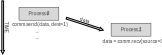
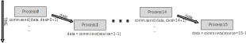
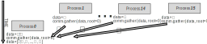
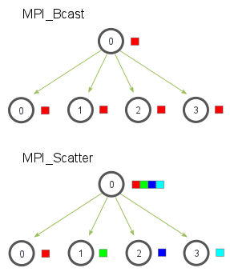

The Message Passing Interface (MPI)
Alexandre Strube
May 8, 2023
Part 2: The Message Passing Interface
- Same program, running many times
- Each “task” is a full copy of the program
- Can have:
- many per node (we have many cores!)
- or one per node (each MPI task does its own threading, for example)
- or one CPU process for each gpu
- It really depends on what your code does
- As it’s always the same code, you should tell it to do different things
- How? Each copy of the program has a different
rank
Basic concepts
- Rank: the “serial number” of the task of running
program.
- Each task (or process) has an unique rank
- Size: how many tasks/copies of the program are running
- Communicator: A way to group processes
- There’s always a “world” communicator, which knows all processes
- It’s called MPI_COMM_WORLD 😒
Minimal MPI Example
Save this as mpi-hello.py on your course directory
Let’s make a submission for it:
Save this one as mpi-py.sbatch
#!/bin/bash -x
#SBATCH --account=training2306
#SBATCH --mail-user=MYUSER@fz-juelich.de
#SBATCH --mail-type=ALL
#SBATCH --nodes=2
#SBATCH --ntasks-per-node=8
#SBATCH --job-name=mpi-hello-world
#SBATCH --cpus-per-task=1
#SBATCH --output=output.%j
#SBATCH --error=err.%j
#SBATCH --time=00:10:00
#SBATCH --partition=dc-gpu
#SBATCH --reservation=training2306 # For this course only
cd $HOME/course/$USER
source sc_venv_template/activate.sh
srun python mpi-hello.pySubmit the job
Output
Hello, World! I am rank 14 of world size 16 on jrc0254.
Hello, World! I am rank 8 of world size 16 on jrc0254.
Hello, World! I am rank 15 of world size 16 on jrc0254.
Hello, World! I am rank 10 of world size 16 on jrc0254.
Hello, World! I am rank 13 of world size 16 on jrc0254.
Hello, World! I am rank 9 of world size 16 on jrc0254.
Hello, World! I am rank 11 of world size 16 on jrc0254.
Hello, World! I am rank 12 of world size 16 on jrc0254.
Hello, World! I am rank 7 of world size 16 on jrc0229.
Hello, World! I am rank 4 of world size 16 on jrc0229.
Hello, World! I am rank 5 of world size 16 on jrc0229.
Hello, World! I am rank 3 of world size 16 on jrc0229.
Hello, World! I am rank 2 of world size 16 on jrc0229.
Hello, World! I am rank 6 of world size 16 on jrc0229.
Hello, World! I am rank 0 of world size 16 on jrc0229.
Hello, World! I am rank 1 of world size 16 on jrc0229.Some insights
- The text is out of order. Why?
- Because they are running in parallel! No way to know the order
- Begins in 0, ends in 15 (so, there are 16)
- There are 16 lines, but only two unique names at
the end. Why?
The name is “Message Passing Interface” because..
It passes messages! 🤯
- One-to-one: mpi_send -> mpi_recv
- One-to-many: Broadcast and Scatter
- Many-to-one: Gather
- Many-to-many: Allgather
MPI_send -> MPI_recv

- The sender needs to know to whom the message goes (parameter dest on the left)
- The receiver must know that a message is coming, and from whom (parameter source on the right)
- Sender and receiver ‘block’ until the message is sent (and received)
Let’s modify our hello world
#!/usr/bin/env python
from mpi4py import MPI
comm = MPI.COMM_WORLD
size = comm.Get_size()
rank = comm.Get_rank()
name = MPI.Get_processor_name()
if rank % 2 == 0:
# The rank is an even number
data=str("Rank %d on host %s says hi!" % (rank, name))
comm.send(data, dest = rank+1)
else:
# The rank is an odd number
data = comm.recv(source = rank-1)
print("Rank %d on host %s received the following data:'%s'" % (rank, name, data))Mpi send

Output
Rank 5 on host jrc0437 received the following data:'Rank 4 on host jrc0437 says hi!'
Rank 11 on host jrc0438 received the following data:'Rank 10 on host jrc0438 says hi!'
Rank 9 on host jrc0438 received the following data:'Rank 8 on host jrc0438 says hi!'
Rank 13 on host jrc0438 received the following data:'Rank 12 on host jrc0438 says hi!'
Rank 15 on host jrc0438 received the following data:'Rank 14 on host jrc0438 says hi!'
Rank 1 on host jrc0437 received the following data:'Rank 0 on host jrc0437 says hi!'
Rank 3 on host jrc0437 received the following data:'Rank 2 on host jrc0437 says hi!'
Rank 7 on host jrc0437 received the following data:'Rank 6 on host jrc0437 says hi!'MPI Gather

- All ranks call the same function
comm.gather(data, root=RANK)
- We usually gather with root being rank 0 (as habit)
- After the gather, the root has an array with all
data from all ranks (including itself)
- And the other ranks lose their data
Mpi Gather Example
from mpi4py import MPI
comm = MPI.COMM_WORLD
size = comm.Get_size()
rank = comm.Get_rank()
data = (rank+1)**2
data = comm.gather(data, root=0)
if rank == 0:
print(data)
else:
assert data is NoneOutput:
Other Collectives: Broadcast and Scatter

https://mpitutorial.com/tutorials/mpi-scatter-gather-and-allgather/
Other collective: Allgather

https://mpitutorial.com/tutorials/mpi-scatter-gather-and-allgather/
And there’s much more!
- But let’s stop here,
- “Because he knows the time is short” [1]
- [1]: Iron Maiden, The Number of the Beast
That’s a wrap! 🎁
As of now, I expect you managed to:
- Remember that computers don’t talk to each other by themselves
- You have to tell whom to talk, whom to hear
- On supercomputers, we pass messages
- We can pass messages to one or many nodes
Thanks a lot!
- Play with the code! Change it, add to it! 👨💻
- Use the compute time!
- we have 50,000h on each supercomputer for this week
- Don’t be afraid to ask
- (I am literally paid for this 🤑)
- Slack, email, stop me in the street and invite me to some beers 🍻
- Have fun and enjoy the rest of the course!